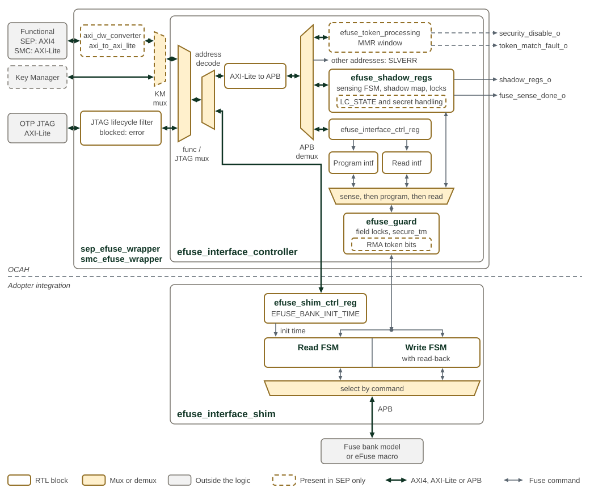
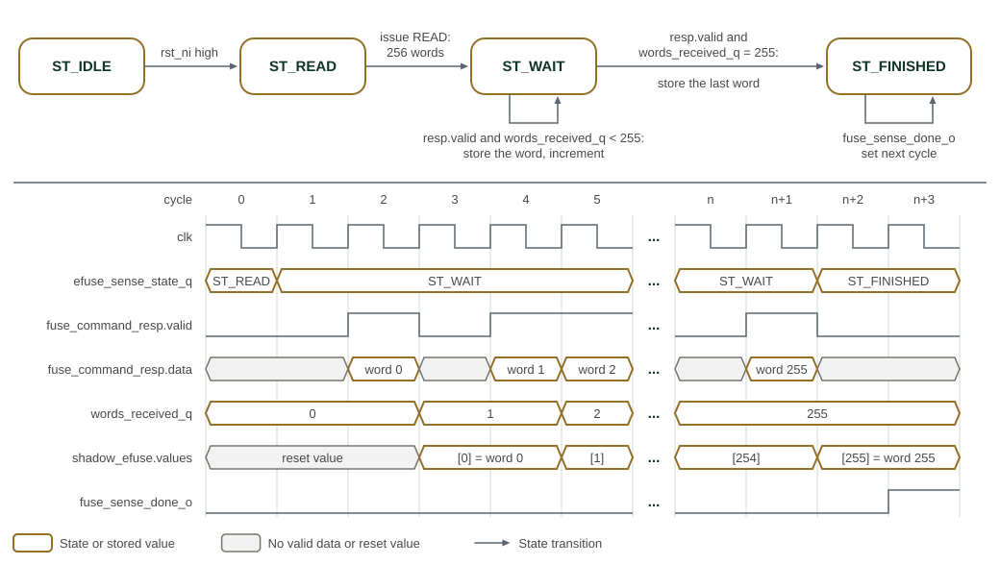

OTP Fuse Controller
The One-Time Programmable (OTP) fuse controller stores persistent chiplet policy. At cold reset it senses the fuse bank into shadow registers for software access and hardware policy enforcement. Programming a fuse and updating its shadow are separate operations.
SEP OTP fuse bank shows the fuse-bank organization.

Each row of SEP OTP fuse bank is 32 bytes, eight 32-bit words, at the offset given on the left from the base of the MAP window; a field that crosses a row boundary continues at the start of the next row. The shading gives the storage class of each field’s shadow register. The lock field, the lifecycle state, the two disable vectors and the two RMA token digests are held in non-scannable storage. CLASS_KEY, CHIPLET_UID, SIP_UID and SYS_UID are non-scannable as well and read as zero downstream while SECURE_TM is 1. The nine spare fields fill the last nine rows and are drawn as one band.
eFuse controller and technology-specific interface shim shows the controller boundary and the technology-specific fuse interface.

The figure reads from the bus ports on the left to the fuse bank at the bottom. Thick arrows are AXI4, AXI-Lite or APB, and thin double-headed arrows carry a fuse command and its response. The dashed line separates the OCAH controller from the interface shim, which an adopter replaces with one for its fuse technology.
Both wrappers pass the OTP JTAG port through a lifecycle filter that answers a
blocked access with an error response. Inside the controller, an AXI-Lite
multiplexer merges the functional and JTAG ports. Addresses from the MAP window
to the end of the last register window go through the AXI-Lite to APB bridge,
and all others go to the shim’s bank control registers. The APB decode answers
any address in that span outside the register windows with SLVERR. The command
multiplexer gives automatic sensing priority until it completes, then gives
programming priority over reading, and efuse_guard filters every command
before it reaches the shim.
The SMC reuses the controller in smc_efuse_wrapper with HAS_LC_STATE=0, so
the logic with a dashed outline is absent there:
-
The MMR window and
efuse_token_processing: the SMC address map has no MMR window, andsecurity_disable_oandtoken_match_fault_oare tied low. -
The LC_STATE handling in
efuse_shadow_regs: the held INVALID output before sensing, the token-gated LC_STATE writes and the secret masking in secure test mode. The SMC has no secret-shadow ranges and tiessecure_tm_ilow. -
The RMA token-bit gate in
efuse_guard. -
The width converter and the Key Manager port of
sep_efuse_wrapper: the SMC functional port is a 32-bit AXI-Lite port connected to the controller directly.
The SMC has no local lifecycle controller. Its JTAG lifecycle filter decodes
the lifecycle state received from SEP, and its security_disable_i input takes
the SEP security-disable status, which skips fuse sensing and opens the shadow
registers to software.
1. Fuse Sensing and Boot Sequencing
When SEP is released from reset (chiplet_cold_reset), the sensing FSM automatically copies each fuse field into its dedicated memory-mapped shadow register.
The logical LC_STATE output remains 4’b1111 until fuse
sensing completes; only then is the LC_STATE value sensed from the fuses driven
to downstream logic such as the lifecycle controller. SEP fuse fields
defines whether software can read and write the shadow register of each fuse
field. Shadow registers that are not software-visible drive their fuse values
directly to downstream hardware. All fuse fields other than LOCKS and LC_STATE
are made available to downstream logic as soon as they are ready.
After the fuses have been read into their shadow registers, a sense-completion indicator is generated. This triggers the DFT-based memory-repair machine for the SEP SRAMs. Once memory repair completes or is bypassed, the SEP CPU is enabled and fetches its first instruction from the SEP ROM.
eFuse sensing state machine and shadow-register timing shows the fuse-sensing sequence and shadow-register timing.

The upper part of eFuse sensing state machine and shadow-register timing shows the four states of the
sensing FSM in efuse_shadow_regs, and the lower part shows one sensing run
cycle by cycle. ST_READ issues a single READ command for all 256 shadow words.
The shim then returns one fuse_command_resp.valid strobe per word, and
strobes may arrive on consecutive cycles. Each strobe stores its data in the
shadow word indexed by words_received_q and increments the counter; a strobe
with its status bit set still advances the counter but leaves that word
unwritten. The strobe that arrives while the counter is 255 stores the last
word and moves the FSM to ST_FINISHED, and fuse_sense_done_o rises one cycle
later. Until then, APB accesses to the MAP window return SLVERR.
2. Shadow Register and JTAG Access Control
Each assigned lock slot contains an independent write-lock and read-lock bit. A write-lock blocks fuse programming and shadow writes; a read-lock blocks software and JTAG reads of both the fuse field and its shadow. The sensing FSM can still read locked fuses to populate the shadows.
There are two exceptions: the LOCKS and LOCKS_SPARE registers have no lock
slot of their own, and LC_STATE ignores its assigned lock bits. Lifecycle
transition and token checks still apply to LC_STATE. The slot numbers and
bit positions are defined in SEP fuse fields.
The fuse block’s internal space, including the fuse-programming configuration space, is accessible through both a JTAG interface and an AXI interface, as shown in the figure, and each interface has its own access control. In addition to the shadow-register access control defined by SEP fuse fields, the JTAG port shall be further restricted: in the PROD and RMA_SIP states it may reach only the eFuse MMR token block. That block is the three token-input arrays (RMA_SIP_TOKEN_I, RMA_CHIPLET_TOKEN_I and SEC_DISABLE_TOKEN_I), the TOKEN_EOP register that triggers a match, and the three match-status registers. Every other JTAG access to the fuse block — the shadow registers, the interface control registers and the SHIM — shall complete with an error response.
3. Fuse Programming and RMA Authorization
The fuse-programming protection shall enable the fuse-programming function only after the LOCKS field has been sensed, and shall honor the write-lock value of each field. Programming LC_STATE is subject to additional restrictions: LC_STATE[2:1] indicate whether the chiplet is in an RMA state (see the LC State Machine section of the Life Cycle Controller). The SEP fuse controller implements two 256-bit registers, RMA_SIP_TOKEN_I and RMA_CHIPLET_TOKEN_I.
These two registers can be populated by both SEP software and JTAG. Each input is hashed (SHA-256) and compared with the stored RMA_SIP_TOKEN_DIGEST and RMA_CHIPLET_TOKEN_DIGEST, respectively. Only on a match can LC_STATE[1] and LC_STATE[2] be programmed. For the matching mechanism, see Token Matching Mechanism and Attack Countermeasures.
3.1. Programming Voltage
The fuse bank shall support keeping the programming-voltage rail active for an unlimited lifetime. This is achieved by using only the internal charge-pump-generated programming voltage rather than the external programming voltage.
The charge pump is calibrated early in wafer test, and its calibration values are burned into the corresponding fuse bits; this is the only time the external fuse-programming voltage is used. Consequently, software-initiated fuse programming never needs to configure the programming voltage.
4. Shadow Register Updates and Test-Mode Protection
-
Programming a fuse does not update its shadow register until the next fuse sensing occurs.
-
The shadow registers of LOCK (both the LOCKS and LOCKS_SPARE windows), LC_STATE, SIP_DIS, and SYS_DIS are non-scannable. Any register on the path from these registers to the feature control outputs or the fuse write-enable signals is likewise non-scannable.
-
When SECURE_TM is 1 (see the Test Mode section), the shadow registers of LOCK (both the LOCKS and LOCKS_SPARE windows), LC_STATE, SIP_DIS, and SYS_DIS shall be blocked from any update, from every source — software, JTAG, and TRoot. This list is normative and exhaustive: these are the fields whose perturbation could enable a feature that a DIS vector or the lifecycle state has disabled. An implementation may block further fields, but no other requirement in this specification depends on it.
To prevent test patterns from accidentally or maliciously changing or reading out the fuse values:
-
When SECURE_TM is 1, the fuse write-enable inputs to the fuse IP block are tied inactive, and the fuse-bank outputs are disconnected from downstream logic. If needed, dedicated test registers can be added to drive the downstream logic during test.
5. Fuse Fields
SEP fuse fields lists lock slots, field sizes, shadow access permissions and purposes. Slot numbers select lock bits; they are neither OTP word offsets nor register addresses. Access permissions remain subject to the lock and lifecycle rules above.
| Field | Lock slot | Size (bits) | SW writable | SW readable | Description |
|---|---|---|---|---|---|
LOCK |
— |
96 |
set-only |
true |
Lock state occupies OTP words 0–2:
Firmware reads the complete state as three consecutive 32-bit words.
There are 41 assigned slots (0–40); slot 0 belongs to |
LC_STATE |
0 |
32 (4-bit state, 8-bit encoding) |
set-only |
true |
Life-cycle state of the
chiplet. The shadow encodes the logical state as |
SBOOT_DIS |
1 |
32 (use only 1 bit) |
true |
true |
Disables secure boot when set to 1, in any lifecycle state. It overrides lifecycle enforcement in PROD and PROD_END and the TEST_DEV / RMA_SiP debug-lock rule, but not a signed manifest’s request for verification; see Secure-Boot Enforcement in the Life Cycle Controller section. |
TRANSIENT_RMA_EN |
2 |
32 (use only 1 bit) |
true |
true |
Enables automatic
RMA shadow-state updates after token matching, without requiring a reset.
It does not enable the token matcher itself. The chiplet-token path has
priority and requires an already established RMA_SIP state; a chiplet match
without that state blocks the transition rather than falling through to a
simultaneous SiP match. When 0, token matches do not automatically update
|
SIP_DIS |
3 |
64 |
set-only |
true |
SiP owner’s feature-control disable vector, provisioned by the chiplet owner. A bit set to 1 disables the corresponding feature. |
SYS_DIS |
4 |
64 |
set-only |
true |
System owner’s feature-control disable vector, provisioned by the SiP owner. A bit set to 1 disables the corresponding feature. |
RMA_SIP_TOKEN_DIGEST |
5 |
256 |
true |
true |
Hash digest of the secret RMA_SIP_TOKEN, that enables entering RMA_SIP Life Cycle state |
RMA_CHIPLET_TOKEN_DIGEST |
6 |
256 |
true |
true |
Hash digest of the secret RMA_CHIPLET_TOKEN that enables entering RMA_CHIPLET Life Cycle state |
CLASS_KEY |
7 |
256 |
true |
true |
Can be used for firmware encryption and decryption. |
CHIPLET_PUBK_REVOKE |
8 |
32 |
set-only |
true |
Global public-key revocation vector covering every boot-verification key of every owner (classical and PQC). SEP ROM embeds a set of public-key hash digests and accesses additional fused key hashes; each key entry maps to one bit here. Once set, SEP ROM rejects the corresponding key. Bit map: [7:0] ROM chiplet-creator classical keys (bits 0,1 are development keys); [15:8] ROM chiplet-creator PQC keys; [16]/[17] CHIPLET_PUBK_HASH0/1; [18]/[19] CHIPLET_PUBK_PQC_HASH0/1; [20]/[21] SIP_PUBK_HASH0 / SIP_PUBK_PQC_HASH0; [22]/[23] SYS_PUBK_HASH / SYS_PUBK_PQC_HASH; [24]/[25] SIP_PUBK_HASH1 / SIP_PUBK_PQC_HASH1; [31:26] reserved. Before the chiplet owner transfers a part to the customer, the development-key bits shall be set (revoked). (Name retained for compatibility; scope is now all owners.) |
BL1_VERSION |
9 |
256 |
set-only |
true |
BL1 anti-rollback storage. The production ROM supplies the low 128 raw bits as security-version flags to the manifest validator; the upper 128 bits do not participate in that check. See Anti-Rollback Security-Version Flags. |
BL2_VERSION |
10 |
256 |
set-only |
true |
BL2 anti-rollback storage for later-stage firmware policy. This bank is not the production ROM’s BL1 security-version input; software using it must define its encoding and enforcement policy. |
CHIPLET_UID |
11 |
256 |
true |
true |
Silicon creator’s secret device unique ID (also referred to as the UDS, Unique Device Secret). The chiplet creator is responsible for CHIPLET_UID provisioning and public identity enrollment. Write-lock and read-lock independently control modification and software visibility. Hardware recording of provisioning measurements is a proposed enhancement. |
SIP_PUBK_HASH0 |
12 |
256 |
true |
true |
Hash digest of SiP owner’s root public key for secure boot (slot 0). Note: The chiplet creator’s actual root public key is embedded in the SEPROM. The digest is used to validate that public key. |
SIP_UID |
13 |
256 |
true |
true |
SiP owner’s secret device unique ID. The SiP owner is responsible for SIP_UID provisioning and public identity enrollment. Write-lock and read-lock independently control modification and software visibility. Hardware recording of provisioning measurements and retention of prior-owner key/UID pairs in the derivation hierarchy are proposed enhancements. |
SYS_PUBK_HASH |
14 |
256 |
true |
true |
Hash digest of system owner’s root public key for secure boot. |
SYS_UID |
15 |
256 |
true |
true |
System owner’s secret device unique ID. The system owner is responsible for SYS_UID provisioning and public identity enrollment. Write-lock and read-lock independently control modification and software visibility. |
STATUS_RPT |
16 |
32 (2 used) |
true |
true |
When STATUS_RPT[1:0] == 2’b00, the boot ROM samples an SMC GPIO (STATUS_RPT) to determine whether to report status. When STATUS_RPT[1:0] == 2’b01, the boot ROM reports status; otherwise, it does not. |
ROM_CTL |
17 |
32 |
true |
true |
ROM_CTL[0]: 0 = little-endian, 1 = big-endian. ROM_CTL[5:1]: row-swap control; swaps ROM slices when set. ROM_CTL[31:6]: reserved. |
SYSCLK_FREQ_MHZ |
18 |
32 (11 used) |
true |
true |
Configured sysclk PLL frequency
in MHz ( |
CHIPLET_PUBK_HASH0 |
19 |
256 |
true |
true |
Hash of chiplet-owner authentication key 0, fused. These fused chiplet-owner key hashes can be used in addition to the hashes embedded in the ROM to authenticate manifests. |
CHIPLET_PUBK_HASH1 |
20 |
256 |
true |
true |
Hash of chiplet-owner authentication key 1, fused. |
REQUIRED_SIGNERS |
21 |
32 (use only 2 bits) |
true |
true |
Owners whose signature a manifest must carry to be authenticated by SEP ROM. Per owner, 1 = required, 0 = not-required; the default all-zero value requires no additional owner. [0] SiP owner, [1] system owner, [31:2] reserved. The chiplet creator is the root of trust — its classical and PQC root digests are embedded in SEP ROM and always authenticate BL1 — so it has no bit here. Burning a fuse bit only ever adds a required signer, so the fuse is monotonic: the standard LOCK bits exist but locking this field is unnecessary, since a later burn can never weaken security. The value is applied via the shadow register (loaded from the fuse at cold reset, SW-writable): firmware may update the shadow to set the required signers for each manifest it verifies (BL1, BL2, runtime, …). See Secure-Boot Signing Model in the Life Cycle Controller section. |
REQUIRED_ALGS |
22 |
32 (use only 12 bits) |
set-only |
true |
Per-owner required signature algorithms, applied only when that owner is required. Each owner has a 4-bit nibble; bit 0 = classical (ECDSA P-384 or RSA), bit 1 = post-quantum (ML-DSA), bits 3:2 reserved. The specific classical scheme and ML-DSA parameter set (e.g., ML-DSA-44/65/87) are set by the owner’s provisioned keys, not mandated here. [3:0] chiplet, [7:4] SiP owner, [11:8] system owner, [31:12] reserved. For each required (owner, algorithm) the manifest must carry a signature verified against that owner’s burned, non-revoked key of that type; all required pairs must verify, and any signature from a non-required owner is ignored. |
CHIPLET_PUBK_PQC_HASH0 |
23 |
256 |
true |
true |
Chiplet owner ML-DSA PQC authentication key 0 hash, fused. PQC counterpart of CHIPLET_PUBK_HASH0. |
CHIPLET_PUBK_PQC_HASH1 |
24 |
256 |
true |
true |
Chiplet owner ML-DSA PQC authentication key 1 hash, fused. PQC counterpart of CHIPLET_PUBK_HASH1. |
SIP_PUBK_PQC_HASH0 |
25 |
256 |
true |
true |
Hash digest of the SiP owner’s ML-DSA PQC root public key for secure boot (slot 0). PQC counterpart of SIP_PUBK_HASH0. |
SYS_PUBK_PQC_HASH |
26 |
256 |
true |
true |
Hash digest of the system owner’s ML-DSA PQC root public key for secure boot. PQC counterpart of SYS_PUBK_HASH. |
SIP_PUBK_HASH1 |
27 |
256 |
true |
true |
Hash digest of the SiP owner’s root public key for secure boot, slot 1. Second slot so the SiP owner retains a usable root key after revoking slot 0 via CHIPLET_PUBK_REVOKE[24]. |
SIP_PUBK_PQC_HASH1 |
28 |
256 |
true |
true |
Hash digest of the SiP owner’s ML-DSA PQC root public key for secure boot, slot 1. PQC counterpart of SIP_PUBK_HASH1; revocable via CHIPLET_PUBK_REVOKE[25]. |
SEP_CHIPLET_ID |
29 |
256 |
true |
true |
Per-owner chiplet public identity fuse used as a public identity input to the Key Manager. No read protection is required. |
SEP_SIP_ID |
30 |
256 |
true |
true |
SiP-owner public identity fuse used as a public identity input to the Key Manager. No read protection is required. |
SEP_SYS_ID |
31 |
256 |
true |
true |
System-owner public identity fuse used as a public identity input to the Key Manager. No read protection is required. |
spare0 |
32 |
256 |
true |
true |
Spare field 0 for future use. |
spare1 |
33 |
256 |
true |
true |
Spare field 1 for future use. |
spare2 |
34 |
256 |
true |
true |
Spare field 2 for future use. |
spare3 |
35 |
256 |
true |
true |
Spare field 3 for future use. |
spare4 |
36 |
256 |
true |
true |
Spare field 4 for future use. |
spare5 |
37 |
256 |
true |
true |
Spare field 5 for future use. |
spare6 |
38 |
256 |
true |
true |
Spare field 6 for future use. |
spare7 |
39 |
256 |
true |
true |
Spare field 7 for future use. |
spare8 |
40 |
256 |
true |
true |
Spare field 8 for future use. |
The fuse map is exactly 8192 bits with exclusive end address 0x400 (1024 bytes, 256 × 32-bit words).
The JTAG_ID field has been removed from the fuse map and will be implemented as a top-level port.
6. Anti-Rollback Security-Version Flags
The production ROM reads bits [127:0] of BL1_VERSION into the manifest
validator’s 128-bit device security-version field. These bits define the
enforced BL1 rollback policy.
When secure boot is active, the manifest must contain every flag already set
on the device at the corresponding bit positions: for each byte,
(device & ~manifest) == 0. A manifest missing any device flag fails the
security-version check.
Provision security-version flags consistently with the signed manifest’s
manifest_security_version field. BL2_VERSION is separate storage whose
interpretation belongs to later-stage firmware.
7. RTL Integration
sep_crypto instantiates sep_efuse_wrapper. The wrapper converts the
64-bit SEP AXI interface to 32-bit AXI4-Lite through axi_dw_converter
and axi_to_axi_lite, then connects to the shared efuse_interface_controller.
A separate JTAG AXI4-Lite port provides manufacturing and lifecycle-restricted
access.
The controller uses HAS_LC_STATE=1. Its four-bit logical lifecycle state
starts at bit 96 in the shadow map and uses an eight-bit differential encoding.
sep_lifecycle_ctrl decodes that state with prim_diff_decode_multi, derives
feature controls from SIP_DIS and SYS_DIS, and differentially encodes its
two demotion outputs. The pre-sense invalid-state behavior is described under
Fuse Sensing and Boot Sequencing above.
sep_crypto assembles the Key Manager’s km_otp_data_t input from:
-
The encoded lifecycle shadow and the lifecycle controller’s two demotion outputs; demotion is not read directly from fuses.
-
The secret shadows
chiplet_uid,sip_uid,sys_uidandclass_key. -
The public identity shadows
sep_chiplet_id,sep_sip_idandsep_sys_id.
BL1_VERSION, BL2_VERSION, RMA token digests and public-key hashes are not
part of that Key Manager interface. SEP firmware accesses them through the
shadow interface; the token matcher also consumes the RMA digests internally.
For simulation, adopters need to provide an external eFuse macro model behind the shim interface. Only the generic controller and the shim interfaces are defined here.
For the canonical eFuse IP documentation covering the efuse_interface_controller internals, sensing FSM, and programming protocol, see hw/ip/efuse/doc/index.adoc (included in the SMC documentation via hw/sys/smc/doc/periphs.adoc).
8. Memory Map and Register Reference
8.1. Memory Map
Register offsets are relative to the block base in the subsystem memory map. The detailed map below defines each register and its fields.
8.2. Detailed Register Map
SEP eFuse Map Address Map
Per-field write-lock and read-lock registers for the SEP eFuse map.
Register List:
| Address | Name | Access | Description |
|---|---|---|---|
| 0x0 | LOCKS | RW | - |
| 0x8 | LOCKS_SPARE | RW | - |
| 0xC | LC_STATE | R | - |
| 0x10 | SBOOT_DIS | R | - |
| 0x14 | TRANSIENT_RMA_EN | R | - |
| 0x18 | SIP_DIS | RW | An owner's feature control vector. When set (1'b1), the corresponding feature is disabled. Layout: see the Disable Vector Format section of lifecycle_controller.adoc. |
| 0x20 | SYS_DIS | RW | An owner's feature control vector. When set (1'b1), the corresponding feature is disabled. Layout: see the Disable Vector Format section of lifecycle_controller.adoc. |
| 0x28 | RMA_SIP_TOKEN_DIGEST | R | - |
| 0x48 | RMA_CHIPLET_TOKEN_DIGEST | R | - |
| 0x68 | CLASS_KEY | R | - |
| 0x88 | CHIPLET_PUBK_REVOKE | R | - |
| 0x8C | BL1_VERSION | R | - |
| 0xAC | BL2_VERSION | R | - |
| 0xCC | CHIPLET_UID | R | - |
| 0xEC | SIP_PUBK_HASH0 | R | - |
| 0x10C | SIP_UID | R | - |
| 0x12C | SYS_PUBK_HASH | R | - |
| 0x14C | SYS_UID | R | - |
| 0x16C | STATUS_RPT | R | - |
| 0x170 | ROM_CTL | R | - |
| 0x174 | SYSCLK_FREQ_MHZ | R | - |
| 0x178 | CHIPLET_PUBK_HASH0 | R | - |
| 0x198 | CHIPLET_PUBK_HASH1 | R | - |
| 0x1B8 | REQUIRED_SIGNERS | RW | - |
| 0x1BC | REQUIRED_ALGS | RW | - |
| 0x1C0 | CHIPLET_PUBK_PQC_HASH0 | R | - |
| 0x1E0 | CHIPLET_PUBK_PQC_HASH1 | R | - |
| 0x200 | SIP_PUBK_PQC_HASH0 | R | - |
| 0x220 | SYS_PUBK_PQC_HASH | R | - |
| 0x240 | SIP_PUBK_HASH1 | R | - |
| 0x260 | SIP_PUBK_PQC_HASH1 | R | - |
| 0x280 | SEP_CHIPLET_ID | R | - |
| 0x2A0 | SEP_SIP_ID | R | - |
| 0x2C0 | SEP_SYS_ID | R | - |
| 0x2E0 | spare0 | R | - |
| 0x300 | spare1 | R | - |
| 0x320 | spare2 | R | - |
| 0x340 | spare3 | R | - |
| 0x360 | spare4 | R | - |
| 0x380 | spare5 | R | - |
| 0x3A0 | spare6 | R | - |
| 0x3C0 | spare7 | R | - |
| 0x3E0 | spare8 | R | - |
Register Details:
LOCKS
| Bits | Field | Access | Reset | Description |
|---|---|---|---|---|
| 63 | SEP_SYS_ID_READ_LOCK | RW1S | 0x0 | sep_sys_id_read_lock (slot 31): when set, SEP_SYS_ID is not read-able. |
| 62 | SEP_SYS_ID_WRITE_LOCK | RW1S | 0x0 | sep_sys_id_write_lock (slot 31): when set, SEP_SYS_ID is not write-able. |
| 61 | SEP_SIP_ID_READ_LOCK | RW1S | 0x0 | sep_sip_id_read_lock (slot 30): when set, SEP_SIP_ID is not read-able. |
| 60 | SEP_SIP_ID_WRITE_LOCK | RW1S | 0x0 | sep_sip_id_write_lock (slot 30): when set, SEP_SIP_ID is not write-able. |
| 59 | SEP_CHIPLET_ID_READ_LOCK | RW1S | 0x0 | sep_chiplet_id_read_lock (slot 29): when set, SEP_CHIPLET_ID is not read-able. |
| 58 | SEP_CHIPLET_ID_WRITE_LOCK | RW1S | 0x0 | sep_chiplet_id_write_lock (slot 29): when set, SEP_CHIPLET_ID is not write-able. |
| 57 | SIP_PUBK_PQC_HASH1_READ_LOCK | RW1S | 0x0 | sip_pubk_pqc_hash1_read_lock, when set, this field is not read-able (neither the eFuse nor the shadow register) |
| 56 | SIP_PUBK_PQC_HASH1_WRITE_LOCK | RW1S | 0x0 | sip_pubk_pqc_hash1_write_lock, when set, this field is not write-able (neither the eFuse nor the shadow register) |
| 55 | SIP_PUBK_HASH1_READ_LOCK | RW1S | 0x0 | sip_pubk_hash1_read_lock, when set, this field is not read-able (neither the eFuse nor the shadow register) |
| 54 | SIP_PUBK_HASH1_WRITE_LOCK | RW1S | 0x0 | sip_pubk_hash1_write_lock, when set, this field is not write-able (neither the eFuse nor the shadow register) |
| 53 | SYS_PUBK_PQC_HASH_READ_LOCK | RW1S | 0x0 | sys_pubk_pqc_hash_read_lock, when set, this field is not read-able (neither the eFuse nor the shadow register) |
| 52 | SYS_PUBK_PQC_HASH_WRITE_LOCK | RW1S | 0x0 | sys_pubk_pqc_hash_write_lock, when set, this field is not write-able (neither the eFuse nor the shadow register) |
| 51 | SIP_PUBK_PQC_HASH0_READ_LOCK | RW1S | 0x0 | sip_pubk_pqc_hash0_read_lock, when set, this field is not read-able (neither the eFuse nor the shadow register) |
| 50 | SIP_PUBK_PQC_HASH0_WRITE_LOCK | RW1S | 0x0 | sip_pubk_pqc_hash0_write_lock, when set, this field is not write-able (neither the eFuse nor the shadow register) |
| 49 | CHIPLET_PUBK_PQC_HASH1_READ_LOCK | RW1S | 0x0 | chiplet_pubk_pqc_hash1_read_lock, when set, this field is not read-able (neither the eFuse nor the shadow register) |
| 48 | CHIPLET_PUBK_PQC_HASH1_WRITE_LOCK | RW1S | 0x0 | chiplet_pubk_pqc_hash1_write_lock, when set, this field is not write-able (neither the eFuse nor the shadow register) |
| 47 | CHIPLET_PUBK_PQC_HASH0_READ_LOCK | RW1S | 0x0 | chiplet_pubk_pqc_hash0_read_lock, when set, this field is not read-able (neither the eFuse nor the shadow register) |
| 46 | CHIPLET_PUBK_PQC_HASH0_WRITE_LOCK | RW1S | 0x0 | chiplet_pubk_pqc_hash0_write_lock, when set, this field is not write-able (neither the eFuse nor the shadow register) |
| 45 | REQUIRED_ALGS_READ_LOCK | RW1S | 0x0 | required_algs_read_lock, when set, this field is not read-able (neither the eFuse nor the shadow register) |
| 44 | REQUIRED_ALGS_WRITE_LOCK | RW1S | 0x0 | required_algs_write_lock, when set, this field is not write-able (neither the eFuse nor the shadow register) |
| 43 | REQUIRED_SIGNERS_READ_LOCK | RW1S | 0x0 | required_signers_read_lock, when set, this field is not read-able (neither the eFuse nor the shadow register) |
| 42 | REQUIRED_SIGNERS_WRITE_LOCK | RW1S | 0x0 | required_signers_write_lock, when set, this field is not write-able (neither the eFuse nor the shadow register) |
| 41 | CHIPLET_PUBK_HASH1_READ_LOCK | RW1S | 0x0 | chiplet_pubk_hash1_read_lock, when set, this field is not read-able (neither the eFuse nor the shadow register) |
| 40 | CHIPLET_PUBK_HASH1_WRITE_LOCK | RW1S | 0x0 | chiplet_pubk_hash1_write_lock, when set, this field is not write-able (neither the eFuse nor the shadow register) |
| 39 | CHIPLET_PUBK_HASH0_READ_LOCK | RW1S | 0x0 | chiplet_pubk_hash0_read_lock, when set, this field is not read-able (neither the eFuse nor the shadow register) |
| 38 | CHIPLET_PUBK_HASH0_WRITE_LOCK | RW1S | 0x0 | chiplet_pubk_hash0_write_lock, when set, this field is not write-able (neither the eFuse nor the shadow register) |
| 37 | SYSCLK_FREQ_MHZ_READ_LOCK | RW1S | 0x0 | sysclk_freq_mhz_read_lock, when set, this field is not read-able (neither the eFuse nor the shadow register) |
| 36 | SYSCLK_FREQ_MHZ_WRITE_LOCK | RW1S | 0x0 | sysclk_freq_mhz_write_lock, when set, this field is not write-able (neither the eFuse nor the shadow register) |
| 35 | ROM_CTL_READ_LOCK | RW1S | 0x0 | rom_ctl_read_lock, when set, this field is not read-able (neither the eFuse nor the shadow register) |
| 34 | ROM_CTL_WRITE_LOCK | RW1S | 0x0 | rom_ctl_write_lock, when set, this field is not write-able (neither the eFuse nor the shadow register) |
| 33 | STATUS_RPT_READ_LOCK | RW1S | 0x0 | status_rpt_read_lock, when set, this field is not read-able (neither the eFuse nor the shadow register) |
| 32 | STATUS_RPT_WRITE_LOCK | RW1S | 0x0 | status_rpt_write_lock, when set, this field is not write-able (neither the eFuse nor the shadow register) |
| 31 | SYS_UID_READ_LOCK | RW1S | 0x0 | sys_uid_read_lock, when set, this field is not read-able (neither the eFuse nor the shadow register) |
| 30 | SYS_UID_WRITE_LOCK | RW1S | 0x0 | sys_uid_write_lock, when set, this field is not write-able (neither the eFuse nor the shadow register) |
| 29 | SYS_PUBK_HASH_READ_LOCK | RW1S | 0x0 | sys_pubk_hash_read_lock, when set, this field is not read-able (neither the eFuse nor the shadow register) |
| 28 | SYS_PUBK_HASH_WRITE_LOCK | RW1S | 0x0 | sys_pubk_hash_write_lock, when set, this field is not write-able (neither the eFuse nor the shadow register) |
| 27 | SIP_UID_READ_LOCK | RW1S | 0x0 | sip_uid_read_lock, when set, this field is not read-able (neither the eFuse nor the shadow register) |
| 26 | SIP_UID_WRITE_LOCK | RW1S | 0x0 | sip_uid_write_lock, when set, this field is not write-able (neither the eFuse nor the shadow register) |
| 25 | SIP_PUBK_HASH0_READ_LOCK | RW1S | 0x0 | sip_pubk_hash0_read_lock, when set, this field is not read-able (neither the eFuse nor the shadow register) |
| 24 | SIP_PUBK_HASH0_WRITE_LOCK | RW1S | 0x0 | sip_pubk_hash0_write_lock, when set, this field is not write-able (neither the eFuse nor the shadow register) |
| 23 | CHIPLET_UID_READ_LOCK | RW1S | 0x0 | chiplet_uid_read_lock, when set, this field is not read-able (neither the eFuse nor the shadow register) |
| 22 | CHIPLET_UID_WRITE_LOCK | RW1S | 0x0 | chiplet_uid_write_lock, when set, this field is not write-able (neither the eFuse nor the shadow register) |
| 21 | BL2_VERSION_READ_LOCK | RW1S | 0x0 | bl2_version_read_lock, when set, this field is not read-able (neither the eFuse nor the shadow register) |
| 20 | BL2_VERSION_WRITE_LOCK | RW1S | 0x0 | bl2_version_write_lock, when set, this field is not write-able (neither the eFuse nor the shadow register) |
| 19 | BL1_VERSION_READ_LOCK | RW1S | 0x0 | bl1_version_read_lock, when set, this field is not read-able (neither the eFuse nor the shadow register) |
| 18 | BL1_VERSION_WRITE_LOCK | RW1S | 0x0 | bl1_version_write_lock, when set, this field is not write-able (neither the eFuse nor the shadow register) |
| 17 | CHIPLET_PUBK_REVOKE_READ_LOCK | RW1S | 0x0 | chiplet_pubk_revoke_read_lock, when set, this field is not read-able (neither the eFuse nor the shadow register) |
| 16 | CHIPLET_PUBK_REVOKE_WRITE_LOCK | RW1S | 0x0 | chiplet_pubk_revoke_write_lock, when set, this field is not write-able (neither the eFuse nor the shadow register) |
| 15 | CLASS_KEY_READ_LOCK | RW1S | 0x0 | class_key_read_lock, when set, this field is not read-able (neither the eFuse nor the shadow register) |
| 14 | CLASS_KEY_WRITE_LOCK | RW1S | 0x0 | class_key_write_lock, when set, this field is not write-able (neither the eFuse nor the shadow register) |
| 13 | RMA_CHIPLET_TOKEN_DIGEST_READ_LOCK | RW1S | 0x0 | rma_chiplet_token_digest_read_lock, when set, this field is not read-able (neither the eFuse nor the shadow register) |
| 12 | RMA_CHIPLET_TOKEN_DIGEST_WRITE_LOCK | RW1S | 0x0 | rma_chiplet_token_digest_write_lock, when set, this field is not write-able (neither the eFuse nor the shadow register) |
| 11 | RMA_SIP_TOKEN_DIGEST_READ_LOCK | RW1S | 0x0 | rma_sip_token_digest_read_lock, when set, this field is not read-able (neither the eFuse nor the shadow register) |
| 10 | RMA_SIP_TOKEN_DIGEST_WRITE_LOCK | RW1S | 0x0 | rma_sip_token_digest_write_lock, when set, this field is not write-able (neither the eFuse nor the shadow register) |
| 9 | SYS_DIS_READ_LOCK | RW1S | 0x0 | sys_dis_read_lock, when set, this field is not read-able (neither the eFuse nor the shadow register) |
| 8 | SYS_DIS_WRITE_LOCK | RW1S | 0x0 | sys_dis_write_lock, when set, this field is not write-able (neither the eFuse nor the shadow register) |
| 7 | SIP_DIS_READ_LOCK | RW1S | 0x0 | sip_dis_read_lock, when set, this field is not read-able (neither the eFuse nor the shadow register) |
| 6 | SIP_DIS_WRITE_LOCK | RW1S | 0x0 | sip_dis_write_lock, when set, this field is not write-able (neither the eFuse nor the shadow register) |
| 5 | TRANSIENT_RMA_EN_READ_LOCK | RW1S | 0x0 | TRANSIENT_RMA_EN_READ_LOCK, when set, this field is not read-able (neither the eFuse nor the shadow register) |
| 4 | TRANSIENT_RMA_EN_WRITE_LOCK | RW1S | 0x0 | TRANSIENT_RMA_EN_WRITE_LOCK, when set, this field is not write-able (neither the eFuse nor the shadow register) |
| 3 | SBOOT_DIS_READ_LOCK | RW1S | 0x0 | sboot_dis_read_lock, when set, this field is not read-able (neither the eFuse nor the shadow register) |
| 2 | SBOOT_DIS_WRITE_LOCK | RW1S | 0x0 | sboot_dis_write_lock, when set, this field is not write-able (neither the eFuse nor the shadow register) |
| 1 | LC_STATE_READ_LOCK | RW1S | 0x0 | lc_state_read_lock, when set, this field is not read-able (neither the eFuse nor the shadow register) |
| 0 | LC_STATE_WRITE_LOCK | RW1S | 0x0 | lc_state_write_lock, when set, this field is not write-able (neither the eFuse nor the shadow register) |
LOCKS_SPARE
| Bits | Field | Access | Reset | Description |
|---|---|---|---|---|
| 31:18 | SPARE_LOCK_RSVD | RW1S | 0x0 | Unassigned lock slots 41-47. Reserved for future field lock assignments. |
| 17 | SPARE8_READ_LOCK | RW1S | 0x0 | spare8_read_lock (slot 40): when set, spare8 is not read-able. |
| 16 | SPARE8_WRITE_LOCK | RW1S | 0x0 | spare8_write_lock (slot 40): when set, spare8 is not write-able. |
| 15 | SPARE7_READ_LOCK | RW1S | 0x0 | spare7_read_lock (slot 39): when set, spare7 is not read-able. |
| 14 | SPARE7_WRITE_LOCK | RW1S | 0x0 | spare7_write_lock (slot 39): when set, spare7 is not write-able. |
| 13 | SPARE6_READ_LOCK | RW1S | 0x0 | spare6_read_lock (slot 38): when set, spare6 is not read-able. |
| 12 | SPARE6_WRITE_LOCK | RW1S | 0x0 | spare6_write_lock (slot 38): when set, spare6 is not write-able. |
| 11 | SPARE5_READ_LOCK | RW1S | 0x0 | spare5_read_lock (slot 37): when set, spare5 is not read-able. |
| 10 | SPARE5_WRITE_LOCK | RW1S | 0x0 | spare5_write_lock (slot 37): when set, spare5 is not write-able. |
| 9 | SPARE4_READ_LOCK | RW1S | 0x0 | spare4_read_lock (slot 36): when set, spare4 is not read-able. |
| 8 | SPARE4_WRITE_LOCK | RW1S | 0x0 | spare4_write_lock (slot 36): when set, spare4 is not write-able. |
| 7 | SPARE3_READ_LOCK | RW1S | 0x0 | spare3_read_lock (slot 35): when set, spare3 is not read-able. |
| 6 | SPARE3_WRITE_LOCK | RW1S | 0x0 | spare3_write_lock (slot 35): when set, spare3 is not write-able. |
| 5 | SPARE2_READ_LOCK | RW1S | 0x0 | spare2_read_lock (slot 34): when set, spare2 is not read-able. |
| 4 | SPARE2_WRITE_LOCK | RW1S | 0x0 | spare2_write_lock (slot 34): when set, spare2 is not write-able. |
| 3 | SPARE1_READ_LOCK | RW1S | 0x0 | spare1_read_lock (slot 33): when set, spare1 is not read-able. |
| 2 | SPARE1_WRITE_LOCK | RW1S | 0x0 | spare1_write_lock (slot 33): when set, spare1 is not write-able. |
| 1 | SPARE0_READ_LOCK | RW1S | 0x0 | spare0_read_lock (slot 32): when set, spare0 is not read-able. |
| 0 | SPARE0_WRITE_LOCK | RW1S | 0x0 | spare0_write_lock (slot 32): when set, spare0 is not write-able. |
LC_STATE
| Bits | Field | Access | Reset | Description |
|---|---|---|---|---|
| 31:8 | rsvd | R | 0x0 | Unused |
| 7:0 | lc_state | R | 0xF0 | Life cycle manufacturing state, differentially encoded: {~raw[3:0], raw[3:0]} |
SBOOT_DIS
| Bits | Field | Access | Reset | Description |
|---|---|---|---|---|
| 31:1 | rsvd | R | 0x0 | Unused |
| 0 | disable_secure_boot | R | 0x0 | Chicken bit to disable secure boot in SEP ROM. |
TRANSIENT_RMA_EN
| Bits | Field | Access | Reset | Description |
|---|---|---|---|---|
| 31:1 | rsvd | R | 0x0 | Unused |
| 0 | transient_rma_en | R | 0x0 | When Transient RMA EN is 1, matching on corresponding *_Tokens will automatically transfer the chip to the corresponding RMA state by setting the LC_STATE reg |
SIP_DIS
| Bits | Field | Access | Reset | Description |
|---|---|---|---|---|
| 63:48 | func_reserved | RW1S | 0x0 | Reserved for adopter-defined functional feature gating (bits 63:48). |
| 47:25 | debug_reserved_dbg2 | RW1S | 0x0 | Reserved for adopter-defined inter-chiplet-bypass (DBG_2) debug scan chains (bits 47:25). |
| 24 | sip_debug | RW1S | 0x0 | SIP_DBG (bit 24): Coarse-grained debug enable for the SiP scope: the inter-chiplet debug-bypass gate that admits external (PTAP) debug traffic into this chiplet and forwards it onward to the next chiplet via the outbound JTAG PTAP. 1'b1: disabled. 1'b0: enabled. |
| 23:4 | debug_reserved_dbg1 | RW1S | 0x0 | Reserved for adopter-defined local (DBG_1) debug scan chains (bits 23:4). |
| 3 | smc_fuse_dbg | RW1S | 0x0 | SMC_FUSE_DBG (bit 3): 1'b1: the DFT-inserted access path into the SMC OTP is disabled. 1'b0: enabled. Produced by SEP-LCC feat_ctrl_o, exported on the SEP boundary, and consumed by SMC to gate its own inserted fuse path. |
| 2 | sep_fuse_dbg | RW1S | 0x0 | SEP_FUSE_DBG (bit 2): 1'b1: the DFT-inserted access path into the SEP OTP is disabled. 1'b0: enabled. Also covers the OTP IP-vendor test and calibration interface, which is reachable only over that inserted path. The functional JTAG2AXIL path to the OTP is always available and is not gated by this bit. |
| 1 | chiplet_dbg | RW1S | 0x0 | CHIPLET_DBG (bit 1): Coarse-grained debug enable for the chiplet scope. 1'b1: chiplet-scope debug/scan-dump access disabled. 1'b0: enabled. Never acts alone: an external debugger reaches chiplet-internal resources only when SIP_DBG is open as well. Contributes to the reachability of the crypto/KM secure chain but never authorizes a dump from it. |
| 0 | sep_debug | RW1S | 0x0 | SEP_DBG (bit 0): Coarse-grained debug enable for the SEP scope. 1'b1: SEP-scope debug/scan-dump access disabled and external inbound traffic is filtered. 1'b0: enabled. A local gate only: reaching SEP internal state from an external debugger additionally requires SIP_DBG and CHIPLET_DBG. |
SYS_DIS
| Bits | Field | Access | Reset | Description |
|---|---|---|---|---|
| 63:48 | func_reserved | RW1S | 0x0 | Reserved for adopter-defined functional feature gating (bits 63:48). |
| 47:25 | debug_reserved_dbg2 | RW1S | 0x0 | Reserved for adopter-defined inter-chiplet-bypass (DBG_2) debug scan chains (bits 47:25). |
| 24 | sip_debug | RW1S | 0x0 | SIP_DBG (bit 24): Coarse-grained debug enable for the SiP scope: the inter-chiplet debug-bypass gate that admits external (PTAP) debug traffic into this chiplet and forwards it onward to the next chiplet via the outbound JTAG PTAP. 1'b1: disabled. 1'b0: enabled. |
| 23:4 | debug_reserved_dbg1 | RW1S | 0x0 | Reserved for adopter-defined local (DBG_1) debug scan chains (bits 23:4). |
| 3 | smc_fuse_dbg | RW1S | 0x0 | SMC_FUSE_DBG (bit 3): 1'b1: the DFT-inserted access path into the SMC OTP is disabled. 1'b0: enabled. Produced by SEP-LCC feat_ctrl_o, exported on the SEP boundary, and consumed by SMC to gate its own inserted fuse path. |
| 2 | sep_fuse_dbg | RW1S | 0x0 | SEP_FUSE_DBG (bit 2): 1'b1: the DFT-inserted access path into the SEP OTP is disabled. 1'b0: enabled. Also covers the OTP IP-vendor test and calibration interface, which is reachable only over that inserted path. The functional JTAG2AXIL path to the OTP is always available and is not gated by this bit. |
| 1 | chiplet_dbg | RW1S | 0x0 | CHIPLET_DBG (bit 1): Coarse-grained debug enable for the chiplet scope. 1'b1: chiplet-scope debug/scan-dump access disabled. 1'b0: enabled. Never acts alone: an external debugger reaches chiplet-internal resources only when SIP_DBG is open as well. Contributes to the reachability of the crypto/KM secure chain but never authorizes a dump from it. |
| 0 | sep_debug | RW1S | 0x0 | SEP_DBG (bit 0): Coarse-grained debug enable for the SEP scope. 1'b1: SEP-scope debug/scan-dump access disabled and external inbound traffic is filtered. 1'b0: enabled. A local gate only: reaching SEP internal state from an external debugger additionally requires SIP_DBG and CHIPLET_DBG. |
RMA_SIP_TOKEN_DIGEST
| Bits | Field | Access | Reset | Description |
|---|---|---|---|---|
| 255:0 | token_digest | R | 0x0 | Hash digest of life cycle secret that allows entering RMA_SIP state / Note this is a 256 bit field |
RMA_CHIPLET_TOKEN_DIGEST
| Bits | Field | Access | Reset | Description |
|---|---|---|---|---|
| 255:0 | token_digest | R | 0x0 | Hash digest of life cycle secret that allows entering RMA_CHIPLET state/ Note this is a 256 bit field |
CLASS_KEY
| Bits | Field | Access | Reset | Description |
|---|---|---|---|---|
| 255:0 | key | R | 0x0 | Class key that could be used for FW encryption/decryption |
CHIPLET_PUBK_REVOKE
| Bits | Field | Access | Reset | Description |
|---|---|---|---|---|
| 31:0 | select | R | 0x0 | Global public-key revocation vector covering every boot-verification key of every owner (classical and PQC). SEP ROM embeds a set of public-key hash digests and accesses additional fused key hashes; each key entry maps to one bit here. Once set, SEP ROM rejects the corresponding key. Bit map: [7:0] ROM chiplet-creator classical keys (bits 0,1 are development keys); [15:8] ROM chiplet-creator PQC keys; [16]/[17] CHIPLET_PUBK_HASH0/1; [18]/[19] CHIPLET_PUBK_PQC_HASH0/1; [20]/[21] SIP_PUBK_HASH0 / SIP_PUBK_PQC_HASH0; [22]/[23] SYS_PUBK_HASH / SYS_PUBK_PQC_HASH; [24]/[25] SIP_PUBK_HASH1 / SIP_PUBK_PQC_HASH1; [31:26] reserved. Before the chiplet owner transfers a part to the customer, the development-key bits shall be set (revoked). |
BL1_VERSION
| Bits | Field | Access | Reset | Description |
|---|---|---|---|---|
| 255:0 | version | R | 0x0 | Minimum BL1 version that can be loaded by SEPROM |
BL2_VERSION
| Bits | Field | Access | Reset | Description |
|---|---|---|---|---|
| 255:0 | version | R | 0x0 | Minimum BL2 version that can be loaded by BL1. If more boot stages exist, rollback protection can be implemented by BL2. |
CHIPLET_UID
| Bits | Field | Access | Reset | Description |
|---|---|---|---|---|
| 255:0 | uid | R | 0x0 | Silicon creator's secret device unique ID (also referred to as UDS - Unique Device Secret). The chiplet creator is responsible for CHIPLET_UID provisioning and public identity enrollment. When read-locked, both writability and software visibility are disabled. |
SIP_PUBK_HASH0
| Bits | Field | Access | Reset | Description |
|---|---|---|---|---|
| 255:0 | key_hash | R | 0x0 | Hash digest of SiP owner's root public key for secure boot. The chiplet creator's actual root public key is embedded in the SEPROM; this digest is used to validate that public key. |
SIP_UID
| Bits | Field | Access | Reset | Description |
|---|---|---|---|---|
| 255:0 | uid | R | 0x0 | SiP owner's secret device unique ID. The SiP owner is responsible for SIP_UID provisioning and public identity enrollment. When read-locked, both writability and software visibility are disabled. |
SYS_PUBK_HASH
| Bits | Field | Access | Reset | Description |
|---|---|---|---|---|
| 255:0 | key_hash | R | 0x0 | Hash digest of system owner's root public key for secure boot. |
SYS_UID
| Bits | Field | Access | Reset | Description |
|---|---|---|---|---|
| 255:0 | uid | R | 0x0 | System owner's secret device unique ID. The system owner is responsible for SYS_UID provisioning and public identity enrollment. When read-locked, both writability and software visibility are disabled. |
STATUS_RPT
| Bits | Field | Access | Reset | Description |
|---|---|---|---|---|
| 31:2 | reserved | R | 0x0 | reserved |
| 1:0 | rpt | R | 0x0 | BOOTROM report status based on the bit. 2'b00-> bootrom report status based on GPIO; 2'b01->bootrom report status;otherwise, bootrom does not report status |
ROM_CTL
| Bits | Field | Access | Reset | Description |
|---|---|---|---|---|
| 31:6 | reserved | R | 0x0 | reserved |
| 5:1 | rom_swap_ctrl | R | 0x0 | controls how the rom slices are swapped |
| 0 | rom_endianness_ctrl | R | 0x0 | controls the endianness of the rom data out. 0->little endian; 1->big endian |
SYSCLK_FREQ_MHZ
| Bits | Field | Access | Reset | Description |
|---|---|---|---|---|
| 31:11 | rsvd | R | 0x0 | Reserved |
| 10:0 | sysclk_freq_mhz | R | 0x0 | Configured sysclk PLL frequency in MHz; ignored if 0. Consumed by boot ROM clock math. |
CHIPLET_PUBK_HASH0
| Bits | Field | Access | Reset | Description |
|---|---|---|---|---|
| 255:0 | key_hash | R | 0x0 | Chiplet owner authentication key hash digest, fused. These chiplet owner fused key hashes can be used in addition to the hashes in the ROM itself to authenticate manifests. |
CHIPLET_PUBK_HASH1
| Bits | Field | Access | Reset | Description |
|---|---|---|---|---|
| 255:0 | key_hash | R | 0x0 | Chiplet owner authentication key hash digest, fused. These chiplet owner fused key hashes can be used in addition to the hashes in the ROM itself to authenticate manifests. |
REQUIRED_SIGNERS
| Bits | Field | Access | Reset | Description |
|---|---|---|---|---|
| 31:2 | reserved | R | 0x0 | Reserved |
| 1:0 | required_signers | RW1S | 0x0 | Owners whose signature is required to authenticate any image loadable by SEP ROM. Per owner, 1 = required, 0 = not-required; the default all-zero value requires no additional owner. [0] SiP owner, [1] system owner. The chiplet creator is the root of trust and always authenticates BL1, so it has no bit here. |
REQUIRED_ALGS
| Bits | Field | Access | Reset | Description |
|---|---|---|---|---|
| 31:12 | reserved | R | 0x0 | Reserved |
| 11:8 | sys_algs | RW1S | 0x0 | Per-owner required signature algorithms for system owner. bit 0 = classical, bit 1 = post-quantum (ML-DSA), bits 3:2 reserved. |
| 7:4 | sip_algs | RW1S | 0x0 | Per-owner required signature algorithms for SiP owner. bit 0 = classical, bit 1 = post-quantum (ML-DSA), bits 3:2 reserved. |
| 3:0 | chiplet_algs | RW1S | 0x0 | Per-owner required signature algorithms for chiplet. Each nibble: bit 0 = classical (ECDSA P-384 or RSA), bit 1 = post-quantum (ML-DSA), bits 3:2 reserved. |
CHIPLET_PUBK_PQC_HASH0
| Bits | Field | Access | Reset | Description |
|---|---|---|---|---|
| 255:0 | key_hash | R | 0x0 | Chiplet owner ML-DSA PQC authentication key hash digest, fused. PQC counterpart of the corresponding CHIPLET_PUBK_HASH. |
CHIPLET_PUBK_PQC_HASH1
| Bits | Field | Access | Reset | Description |
|---|---|---|---|---|
| 255:0 | key_hash | R | 0x0 | Chiplet owner ML-DSA PQC authentication key hash digest, fused. PQC counterpart of the corresponding CHIPLET_PUBK_HASH. |
SIP_PUBK_PQC_HASH0
| Bits | Field | Access | Reset | Description |
|---|---|---|---|---|
| 255:0 | key_hash | R | 0x0 | Hash digest of the SiP owner's ML-DSA PQC root public key for secure boot. PQC counterpart of SIP_PUBK_HASH. |
SYS_PUBK_PQC_HASH
| Bits | Field | Access | Reset | Description |
|---|---|---|---|---|
| 255:0 | key_hash | R | 0x0 | Hash digest of the system owner's ML-DSA PQC root public key for secure boot. PQC counterpart of SYS_PUBK_HASH. |
SIP_PUBK_HASH1
| Bits | Field | Access | Reset | Description |
|---|---|---|---|---|
| 255:0 | key_hash | R | 0x0 | Hash digest of SiP owner's root public key for secure boot. The chiplet creator's actual root public key is embedded in the SEPROM; this digest is used to validate that public key. |
SIP_PUBK_PQC_HASH1
| Bits | Field | Access | Reset | Description |
|---|---|---|---|---|
| 255:0 | key_hash | R | 0x0 | Hash digest of the SiP owner's ML-DSA PQC root public key for secure boot. PQC counterpart of SIP_PUBK_HASH. |
SEP_CHIPLET_ID
| Bits | Field | Access | Reset | Description |
|---|---|---|---|---|
| 255:0 | id | R | 0x0 | Per-owner public identity fuse. Personalization input for the Key Manager identity root. Being public, no read protection is required. Individually lockable via LOCKS[58:63] (slots 29-31). |
SEP_SIP_ID
| Bits | Field | Access | Reset | Description |
|---|---|---|---|---|
| 255:0 | id | R | 0x0 | Per-owner public identity fuse. Personalization input for the Key Manager identity root. Being public, no read protection is required. Individually lockable via LOCKS[58:63] (slots 29-31). |
SEP_SYS_ID
| Bits | Field | Access | Reset | Description |
|---|---|---|---|---|
| 255:0 | id | R | 0x0 | Per-owner public identity fuse. Personalization input for the Key Manager identity root. Being public, no read protection is required. Individually lockable via LOCKS[58:63] (slots 29-31). |
spare0
| Bits | Field | Access | Reset | Description |
|---|---|---|---|---|
| 255:0 | rsvd | R | 0x0 | Spare region for future use. Individually lockable via LOCKS_SPARE (slots 32-40). |
spare1
| Bits | Field | Access | Reset | Description |
|---|---|---|---|---|
| 255:0 | rsvd | R | 0x0 | Spare region for future use. Individually lockable via LOCKS_SPARE (slots 32-40). |
spare2
| Bits | Field | Access | Reset | Description |
|---|---|---|---|---|
| 255:0 | rsvd | R | 0x0 | Spare region for future use. Individually lockable via LOCKS_SPARE (slots 32-40). |
spare3
| Bits | Field | Access | Reset | Description |
|---|---|---|---|---|
| 255:0 | rsvd | R | 0x0 | Spare region for future use. Individually lockable via LOCKS_SPARE (slots 32-40). |
spare4
| Bits | Field | Access | Reset | Description |
|---|---|---|---|---|
| 255:0 | rsvd | R | 0x0 | Spare region for future use. Individually lockable via LOCKS_SPARE (slots 32-40). |
spare5
| Bits | Field | Access | Reset | Description |
|---|---|---|---|---|
| 255:0 | rsvd | R | 0x0 | Spare region for future use. Individually lockable via LOCKS_SPARE (slots 32-40). |
spare6
| Bits | Field | Access | Reset | Description |
|---|---|---|---|---|
| 255:0 | rsvd | R | 0x0 | Spare region for future use. Individually lockable via LOCKS_SPARE (slots 32-40). |
spare7
| Bits | Field | Access | Reset | Description |
|---|---|---|---|---|
| 255:0 | rsvd | R | 0x0 | Spare region for future use. Individually lockable via LOCKS_SPARE (slots 32-40). |
spare8
| Bits | Field | Access | Reset | Description |
|---|---|---|---|---|
| 255:0 | rsvd | R | 0x0 | Spare region for future use. Individually lockable via LOCKS_SPARE (slots 32-40). |